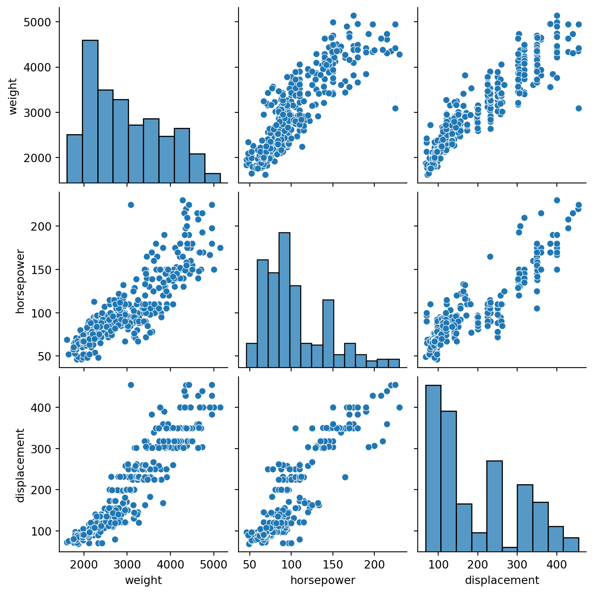
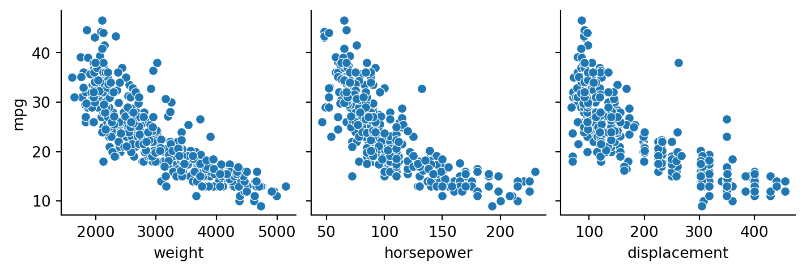
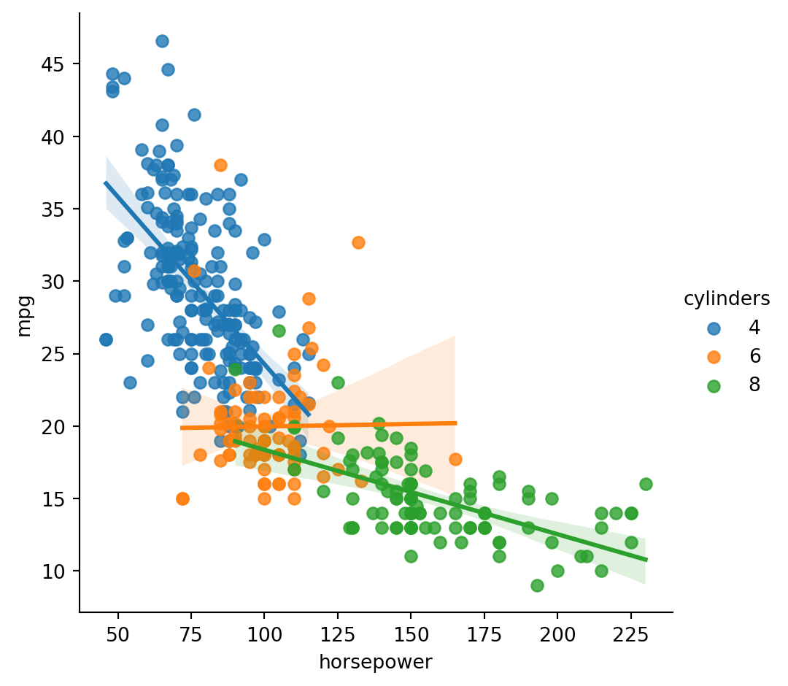
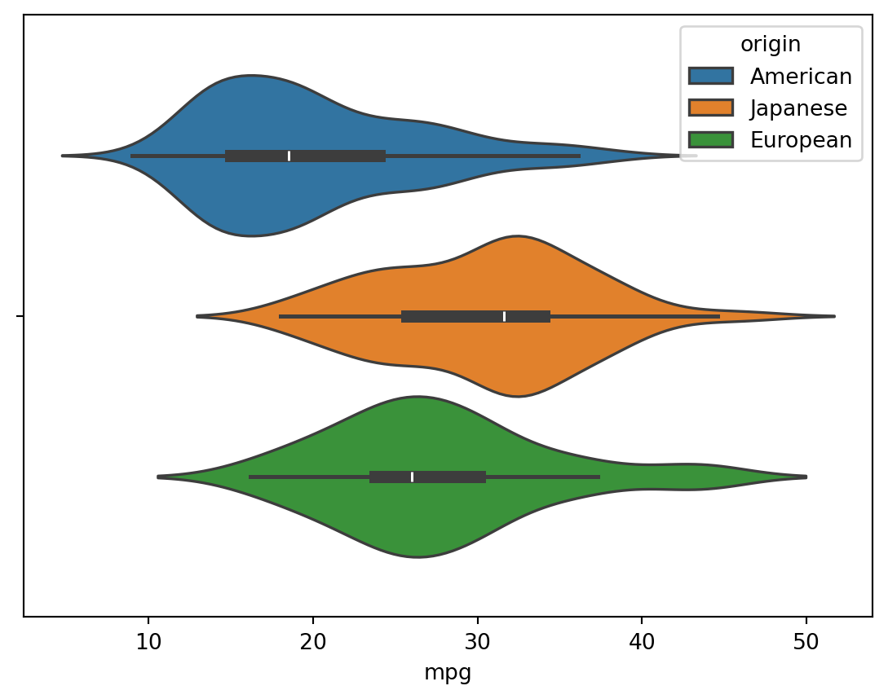

Exercises: Modified 2.4.8, 2.4.10, and parts of the exam last year.
2.4.8: Very similar.
Custom: Very similar, but with bikeshare.
2.4.10: Similar, but (c) and (d) are harder to solve in an excellent way.
This exercise involves the Auto data set. Import the data; make sure it is imported correctly.
The standard imports numpy, pandas, matplotlib.pyplot and seaborn, are hidden from view. But you should be explicit about other imports.
The horsepower column of the data contains missing values encoded by “?”. Moreover, the name column contains the car make, and should be an index column. The origin column is an integer-encoded variable containing the country of origin, which needs to be replaced as per the documentation.
You should not provide the details I did in the lecture here. State why you did what you did, and let the code speak for itself. It is customary to call df.head() whenever you import a data frame.
(a)
Which of the predictors are quantitative, and which are qualitative?
All columns are quantitative except origin and name. This is evident from the documentation. The year variable can be interpreted both as qualitative and quantitative, but the other variables are clear-cut. The variables cylinders and year are integer-valued, while the rest of the quantitative variables are decimal-valued.
The data types in the documentation match the types we have imported.
You need to show awareness that the documentation tells you about wether variables are quantitative or qualitative, and that sometimes variables are both at the same time. For exams, show your actual types using df.dypes or df.info(), to demonstrate that the types of your imported data match the types the data should have.
(b)
What is the range of each quantitative predictor? You can answer this using the min() and max() methods in Pandas.
This way of refering to tables is standard. Be sure to use style.format(precision=k) to control the number of decimals. Remember a caption on the table!
(c)
What is the mean and standard deviation of each quantitative predictor?
Table 2: Means and standard deviations for the auto data.
Mean
Standard deviation
mpg
23.4
7.8
cylinders
5.5
1.7
displacement
194.4
104.6
horsepower
104.5
38.5
weight
2977.6
849.4
acceleration
15.5
2.8
year
76.0
3.7
(d)
Now remove the 10th through 85th observations. What is the range, mean, and standard deviation of each predictor in the subset of the data that remains?
We remove the 10th through 85th observations as requested. The results are in Table 3.
Table 3: Means, standard deviation, and range for the auto data; 10th through 85th variable removed.
Mean
Standard deviation
Range
mpg
25.0
7.9
35.6
cylinders
5.3
1.6
5.0
displacement
179.4
95.5
387.0
horsepower
98.7
33.8
184.0
weight
2881.5
792.5
3197.0
acceleration
15.7
2.6
15.1
year
77.5
3.0
12.0
Be sure to construct the range using e.g. df.max() - df.min() or something similar!
(e)
Using the full data set, investigate the predictors graphically, using scatterplots or other tools of your choice. Create some plots highlighting the relationships among the predictors. Comment on your findings.
The most striking feature of the correlation matrix (Table 4) are the high correlations between cylinders, weight, horsepower, and displacement. All of these are associated with the power of the car, and are higher than \(0.84\). Observe that covariate cylinders is integer-valued, which makes it qualitatively different from the rest. The columns have high negative correlations with mpg too, which is not surprising, as more powerful cars typically consume more gallons of gas per mile.
You should discuss the most clearest patterns first. In this case, that is the red rectangle in the middle of the correlation matrix. Be sure to signal that you understand what constitutes a small/medium/high correlations and what the sign means.
Table 4: Correlation matrix for the auto data.
mpg
cylinders
displacement
horsepower
weight
acceleration
year
mpg
1.00
-0.78
-0.81
-0.78
-0.83
0.42
0.58
cylinders
-0.78
1.00
0.95
0.84
0.90
-0.50
-0.35
displacement
-0.81
0.95
1.00
0.90
0.93
-0.54
-0.37
horsepower
-0.78
0.84
0.90
1.00
0.86
-0.69
-0.42
weight
-0.83
0.90
0.93
0.86
1.00
-0.42
-0.31
acceleration
0.42
-0.50
-0.54
-0.69
-0.42
1.00
0.29
year
0.58
-0.35
-0.37
-0.42
-0.31
0.29
1.00
The year covariate has decent correlations with most columns, especially miles per gallon, likely caused by technological improvements on engines. There are weak negative correlations with measures of power, perhaps reflecting taste trends towards less powerful cars.
Figure 1 shows that the three decimal-valued power variates are linearly related.

Figure 1: Scatterplot for weight, horsepower, and displacement.
It is important to be selective in what you show. It’s rarely appropriate to display the entire pairplot. Find some of the more interesting aspects of the problem instead, and then construct plots.
On the other hand, the relationship between mpg and the power variates is not linear (Figure 2).

Figure 2: Scatterplot for weight, horsepower, and displacement.
When you looked at the pairplot for all the data during the exploratory phase,this was on of the most salient features. The variables are clearly related, bu not linearly.
A closer look reveals an interaction effect between mpg and horsepower, as demonstrated in Figure 3. We only show the cylinders 4, 6, and 8 since the other options have very few observations.

Figure 3: Miles per gallon vs. horsepower for different levels of cylinders. Only cylinders = 4,6,8 shown.
Always look for interactions like these; it makes your document far more impressive and is incredibly useful in modelling. There is no need to plot the other covariates, as we already have plenty of detail.
Similar effects occur for weight and displacement, but the interaction is weaker for weight, but we omit the plots.
(f)
Suppose that we wish to predict gas mileage (mpg) on the basis of the other variables. Do your plots suggest that any of the other variables might be useful in predicting mpg? Justify your answer.
Most of this question has already been answered in the previous exercise. We are only missing the relationship between origin and mpg, plotted in Figure 4.

Figure 4: American cars have the highest miles per gallon, Japanese cars the lowest, and European are in-between.
You should make this plot because this is the only association not already discussed in the previous exercise. It wasn’t discussed there because it was focused on correlations and scatter plots; by including it here you show attention to detail.
There is a relationship between the country of origin and gas mileage. American cars have the highest miles per gallon, Japanese cars the lowest, and European are in-between.
In summary, we find that all variables could be useful in predicting mpg.
cylinders, displacement, horsepower and weight are strongly related to mpg, with correlations about 0.8. They are however strongly correlated with each other too. cylinders is, unlike the other variables, an integer variable.
There is an interaction effect between cylinders and horsepower. Due to the high correlation between horsepower, displacement, and weight, there is likely to be an interaction between cylinders and those variables as well.
The variables acceleration and year have a decently strong correlation with mpg. Not surprisingly, the correlation between mpg and acceleration is negative.
Production year is positively associated with mpg. This is probably due to improvement in car technology. Engines, for instance, get more and more efficient each year.
There is a relationship between mpg and country of origin, but Japanese and European cars are very similar.
(g)
Find the cars with the smallest and largest horsepower and display their data.